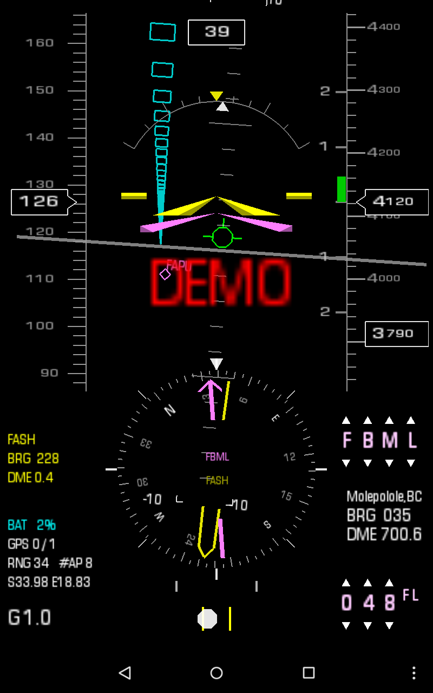
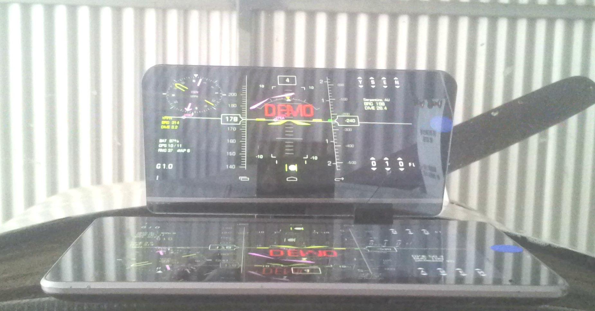
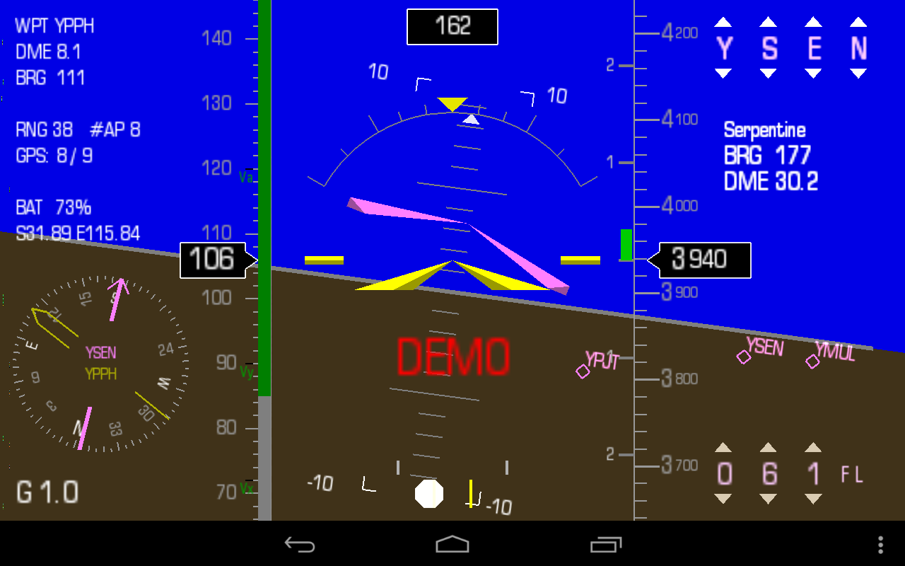
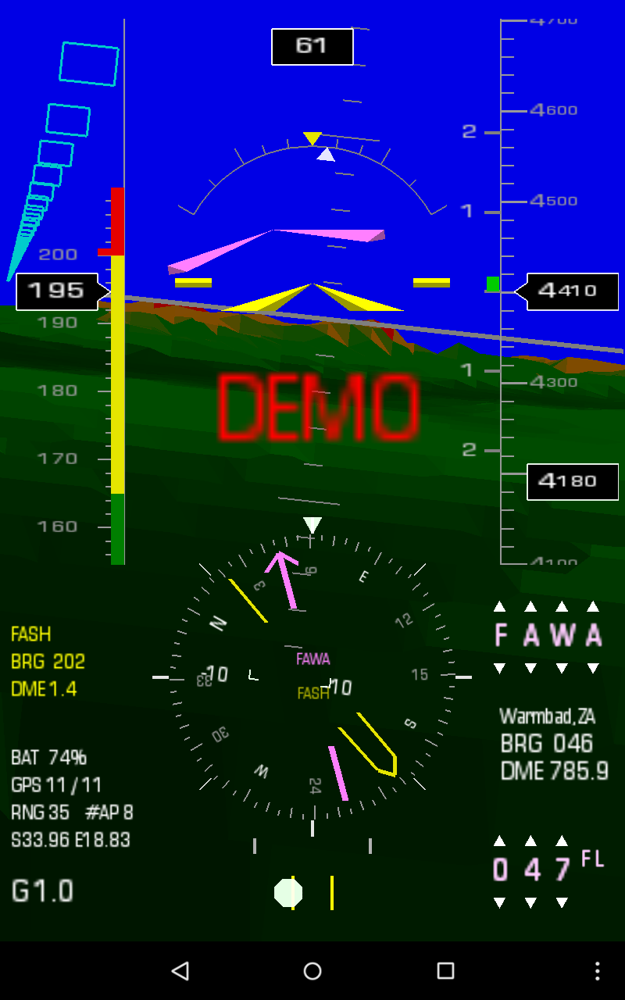
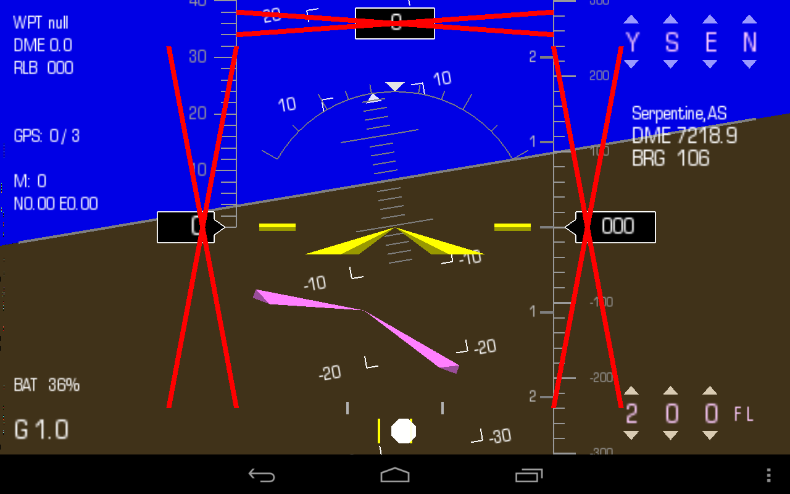
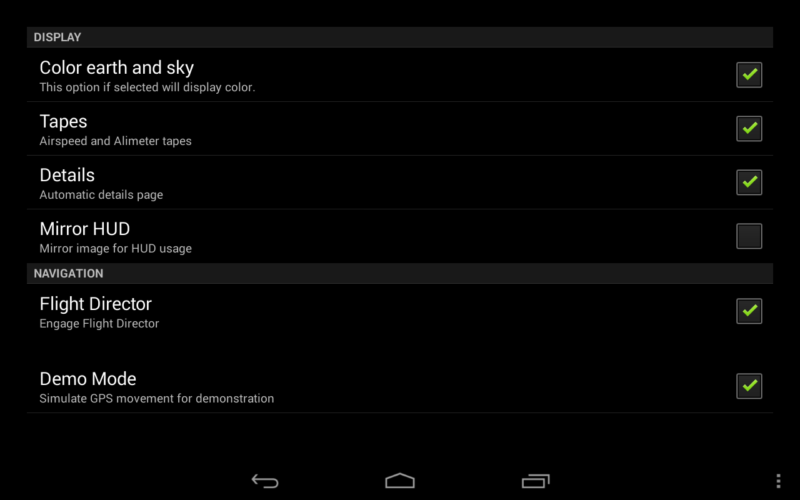
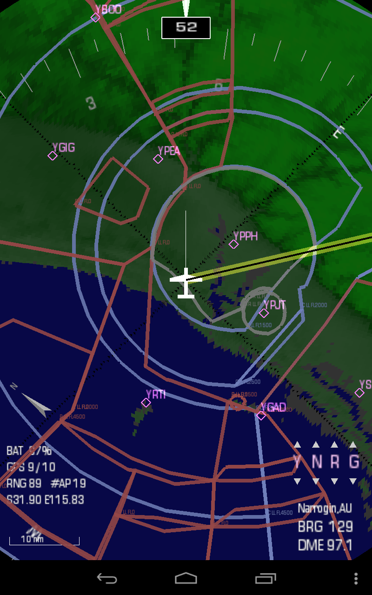

Kwik EFIS provides a flexible arrangement of display options and functionality.
The options can be enabled or disabled in any combination to provide many different display choices.
Below is a few examples showing some of the typical options selected.
Basic Attitude Indicator

|
A common setting would be for basic uncluttered Attitude Indicator display with the Airspeed
and Altitude ribbons enabled. If valid GPS data is available then the surrounding airports
are also displayed.
|
Monochrome
|

|
The monochrome / black and white settings removes most color from the display.
This mode, in combination with the "mirror" setting can be used to project the EFIS onto a suitable
combiner to create a Head Up Display or HUD.

|
Comprehensive
This screen shows the flight director enabled and engaged, compass rose as well as the Details page.
This is the best performance display with most options enabled.
|

|
Active waypoint and selected altitude can be set using the spinwheel style controls on the
top and bottom right respectively.
The the flight director is unique for each type of aircraft and takes into consideration
the v-speeds and performance characteristics particular to to that specific aircraft.
|
Synthetic Vision
This screen shows the synthetic vision enabled in portrait mode.
This is the most comprehensive display with all possible options enabled. This option is only
recommended on Android devices with good processing capacity. For best performance a recent
model Android device is recommended.
|

|
The the synthetic vision is built from SRTM30.
SRTM30 is the global digital elevation model (DEM) produced by the U.S. Geological Survey (USGS)
with a horizontal grid spacing of 30 arc seconds (approximately 1 kilometer)
Realtime rendering of the terrain data to produce synthetic vision is processor intensive.
Terrain proximity
With the digital elevation model active, it is now possible to provide the terrain avoidance
warnings:
YELLOW - Terrain within 1000 ft
RED - Terrain less then 100 ft
The proximity warnings are only active when speed is greater then 1.3 Vs0.
|
Fault Condition
|

|
Fault condition such as sensor failure or loss of GPS information is indicated with the
dreaded RED CROSSES.
|
Options and settings
|

|
The settings and options are provided in a clear and simple grouping and is intuitive to use.
|
Digital Map (DMAP)
Kwik Digital moving Map is a companion application to the EFIS. It provides situational
awareness and and navigation functionality.
|

|
The Kwik Digital moving Map uses the same synthetic vision data as used by the Kwik EFIS. See:
Airspace data is provided from Soaring Services Worldwide Soaring Turnpoint Exchange Airspace
N/W Sector: Europe, Russia
N/E Sector: USA, Canada
S/W Sector: None
S/E Sector: South Africa, Australia
|
Data Packs
Kwik EFIS provides a Digital Elevation Model (DEM) for the provision of synthetic vision and
above ground level altitide (AGL).
The the synthetic vision is built from the USGS 3 arc second Digital Elevation
Model data (SRTM30). If enabled, it also allows for some terrain collision
detection.
Currently available regions.
|